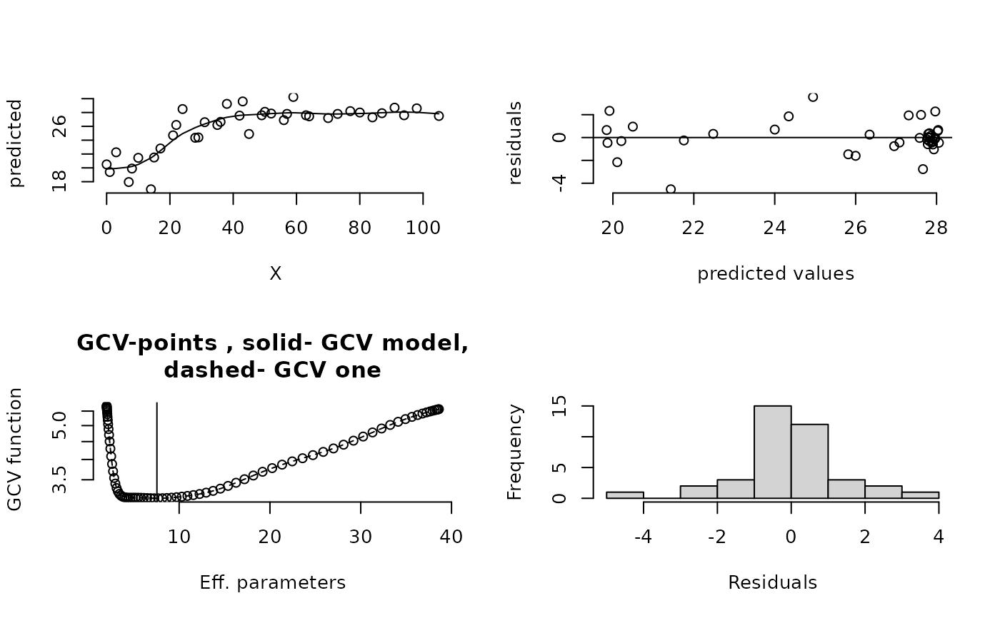
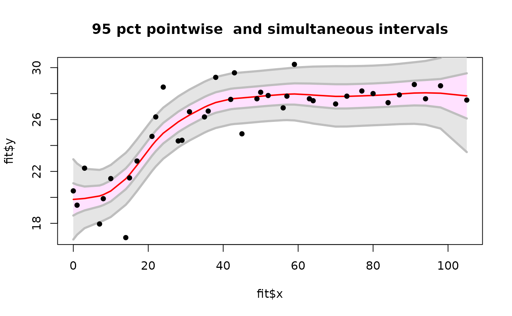
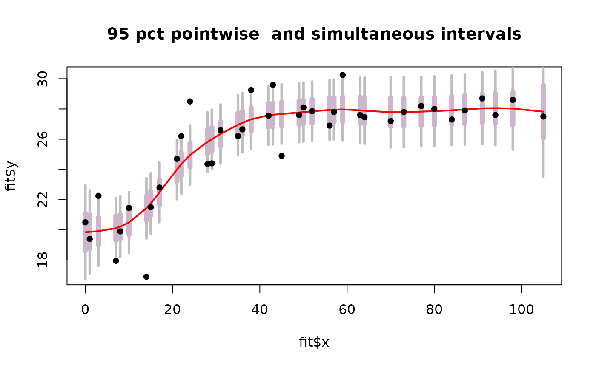

sreg.RdFits a cubic smoothing spline to univariate data. The amount of smoothness can be specified or estimated from the data by GCV. <!--brief description-->
sreg(x, y, lambda = NA, df = NA, offset = 0, weights =
rep(1, length(x)), cost = 1, nstep.cv = 80, tol =
1e-05, find.diagA = TRUE, trmin = 2.01, trmax = NA,
lammin = NA, lammax = NA, verbose = FALSE, do.cv =
TRUE, method = "GCV", rmse = NA, na.rm = TRUE, digits
= 8)
# S3 method for sreg
predict(object, x, derivative = 0, model = 1,...)Vector of x value
Vector of y values
Single smoothing parameter or a vector of values . If omitted smoothing parameter estimated by GCV. NOTE: lam here is equivalent to the value lambda*N in Tps/Krig where N is the number of unique observations. See example below.
An sreg object.
Order of deriviatve to evaluate. Must be 0,1, or 2.
Amount of smoothing in term of effective degrees of freedom for the spline
an offset added to the term cost*degrees of freedom in the denominator of the GCV function. (This would be used for adjusting the df from fitting other models such as in back-fitting additive models.)
Specifies which model parameters to use.
A vector that is proportional to the reciprocal variances of the errors.
Cost value to be used in the GCV criterion.
Number of grid points of smoothing parameter for GCV grid search.
Tolerance for convergence in minimizing the GCV or other criteria to estimate the smoothing parameter.
If TRUE calculates the diagonal elements of the smoothing matrix. The effective number of degrees of freedom is the sum of these diagonal elements. Default is true. This requires more stores if a grid of smoothing parameters is passed. ( See returned values below.)
Sets the minimum of the smoothing parameter range for the GCV grid search in terms of effective degrees of freedom.
Sets the maximum of the smoothing parameter range for the GCV grid search in terms of effective degrees of freedom. If NA the range is set to .99 of number of unique locations.
Same function as trmin but in the lambda scale.
Same function as trmax but in the lambda scale.
Print out all sorts of debugging info. Default is falseof course!
Evaluate the spline at the GCV minimum. Default is true.
A character string giving the method for determining the smoothing parameter. Choices are "GCV", "GCV.one", "GCV.model", "pure error", "RMSE". Default is "GCV".
Value of the root mean square error to match by varying lambda.
If TRUE NA's are removed from y before analysis.
Number of significant digits used to determine replicate x values.
Other optional arguments to pass to the predict function.
Returns a list of class sreg. Some of the returned components are
Call to the function
Vector of dependent variables. If replicated data is given these are the replicate group means.
Unique x values matching the y's.
Proportional to reciprocal variance of each data point.
Proportional to reciprocal pooled variance of each replicated mean data value (xM).
Original x data.
Original y data.
Method used to find the smoothing parameter.
Pure error sum of squares from replicate groups.
Estimate of tau from replicate groups.
Estimate of tau using estimated lambda from GCV minimization
Effective degrees of freedom for the spline estimate(s)
Values of trace, GCV, tauHat. etc. for a grid of smoothing parameters. If lambda ( or df) is specified those values are used.
Summary of various estimates of the smoothing parameter
If lambda is specified the passed vector, if missing the estimated value.
Residuals from spline(s). If lambda or df is specified the residuals from these values. If lambda and df are omitted then the spline having estimated lambda. This will be a matrix with as many columns as the values of lambda.
Matrix of fitted values. See notes on residuals.
A list with components x and y. x is the unique values of xraw in sorted order. y is a matrix of the spline estimates at these values.
Same as trace.
Matrix containing diagonal elements of the smoothing matrix. Number of columns is the number of lambda values. WARNING: If there is replicated data the diagonal elements are those for the smoothing the group means at the unique x locations.
MODEL: The assumed model is Y.k=f(x.k) +e.k where e.k should be approximately normal and independent errors with variances tau**2/w.k
ESTIMATE: A smoothing spline is a locally weighted average of the y's based on the relative locations of the x values. Formally the estimate is the curve that minimizes the criterion:
(1/n) sum(k=1,n) w.k( Y.k - f( X.k))**2 + lambda R(f)
where R(f) is the integral of the squared second derivative of f over the range of the X values. Because of the inclusion of the (1/n) in the sum of squares the lambda parameter in sreg corresponds to the a value of lambda*n in the Tps function and in the Krig function.
The solution to this minimization is a piecewise cubic polynomial with the join points at the unique set of X values. The polynomial segments are constructed so that the entire curve has continuous first and second derivatives and the second and third derivatives are zero at the boundaries. The smoothing has the range [0,infinity]. Lambda equal to zero gives a cubic spline interpolation of the data. As lambda diverges to infinity ( e.g lambda =1e20) the estimate will converge to the straight line estimated by least squares.
The values of the estimated function at the data points can be expressed in the matrix form:
predicted values= A(lambda)Y
where A is an nXn symmetric matrix that does NOT depend on Y. The diagonal elements are the leverage values for the estimate and the sum of these (trace(A(lambda)) can be interpreted as the effective number of parameters that are used to define the spline function. IF there are replicate points the A matrix is the result of finding group averages and applying a weighted spline to the means. The A matrix is also used to find "Bayesian" confidence intervals for the estimate, see the example below.
CROSS-VALIDATION:The GCV criterion with no replicate points for a fixed value of lambda is
(1/n)(Residual sum of squares)/((1-(tr(A)-offset)*cost + offset)/n)**2,
Usually offset =0 and cost =1. Variations on GCV with replicate points are described in the documentation help file for Krig. With an appropriate choice for the smoothing parameter, the estimate of tau**2 is found by (Residual sum of squares)/tr(A).
COMPUTATIONS: The computations for 1-d splines exploit the banded structure of the matrices needed to solve for the spline coefficients. Banded structure also makes it possible to get the diagonal elements of A quickly. This approach is different from the algorithms in Tps and tremendously more efficient for larger numbers of unique x values ( say > 200). The advantage of Tps is getting "Bayesian" standard errors at predictions different from the observed x values. This function is similar to the S-Plus smooth.spline. The main advantages are more information and control over the choice of lambda and also the FORTRAN source code is available (css.f).
See also the function splint which is designed to be a bare bones
but fast smoothing spline.
Krig, Tps, splint
# fit a GCV spline to
# control group of rats.
fit<- sreg(rat.diet$t,rat.diet$con)
summary( fit)
#> CALL:
#> sreg(x = rat.diet$t, y = rat.diet$con)
#>
#> Number of Observations: 39
#> Number of unique points: 39
#> Eff. degrees of freedom for spline: 7.6
#> Residual degrees of freedom: 31.4
#> GCV est. tau 1.581
#> lambda 10.42
#>
#> RESIDUAL SUMMARY:
#> min 1st Q median 3rd Q max
#> -4.53200 -0.46270 -0.07006 0.61350 3.55300
#>
#> DETAILS ON SMOOTHING PARAMETER:
#> Method used: Cost:
#> lambda trA GCV GCV.one GCV.model tauHat
#> 10.423 7.550 3.098 3.098 NA 1.581
#>
#> Summary of estimates for lambda
#> lambda trA GCV tauHat converge
#> GCV 10.42 7.55 3.098 1.581 4
#> GCV.one 10.42 7.55 3.098 1.581 4
set.panel(2,2)
#> plot window will lay out plots in a 2 by 2 matrix
plot(fit) # four diagnostic plots of fit

set.panel()
#> plot window will lay out plots in a 1 by 1 matrix
predict( fit) # predicted values at data points
#> [1] 19.84457 19.86637 19.91489 20.10735 20.20748 20.49242 21.43099 21.75381
#> [9] 22.47953 24.00058 24.34566 24.94673 25.81778 25.99919 26.34511 26.95274
#> [17] 27.08416 27.31120 27.58160 27.61676 27.66454 27.76603 27.79317 27.84516
#> [25] 27.93358 27.95091 27.96834 27.90773 27.88407 27.78388 27.78546 27.82238
#> [33] 27.85489 27.90905 27.96906 28.04095 28.05798 28.02834 27.82057
xg<- seq(0,110,,50)
sm<-predict( fit, xg) # spline fit at 50 equally spaced points
der.sm<- predict( fit, xg, deriv=1) # derivative of spline fit
set.panel( 2,1)
#> plot window will lay out plots in a 2 by 1 matrix
plot( fit$x, fit$y) # the data
lines( xg, sm) # the spline
plot( xg,der.sm, type="l") # plot of estimated derivative
set.panel() # reset panel to 1 plot
#> plot window will lay out plots in a 1 by 1 matrix
# the same fit using the thin plate spline numerical algorithms
# sreg does not scale the obs so instruct Tps not to sacel either
# this will make lambda comparable within factor of n.
fit.tps<-Tps( rat.diet$t,rat.diet$con, scale="unscaled")
summary( fit.tps)
#> CALL:
#> Tps(x = rat.diet$t, Y = rat.diet$con, scale.type = "unscaled")
#>
#> Number of Observations: 39
#> Number of unique points: 39
#> Number of parameters in the null space 2
#> Parameters for fixed spatial drift 2
#> Effective degrees of freedom: 7.6
#> Residual degrees of freedom: 31.4
#> MLE tau 1.482
#> GCV tau 1.58
#> MLE sigma 0.005488
#> Scale passed for covariance (sigma) <NA>
#> Scale passed for nugget (tau^2) <NA>
#> Smoothing parameter lambda 400.4
#>
#> Residual Summary:
#> min 1st Q median 3rd Q max
#> -4.52600 -0.46540 -0.07029 0.61010 3.54900
#>
#> Covariance Model: Rad.cov
#> Names of non-default covariance arguments:
#> p
#>
#> DETAILS ON SMOOTHING PARAMETER:
#> Method used: GCV Cost: 1
#> lambda trA GCV GCV.one GCV.model tauHat
#> 400.400 7.575 3.098 3.098 NA 1.580
#>
#> Summary of all estimates found for lambda
#> lambda trA GCV tauHat -lnLike Prof converge
#> GCV 400.4 7.575 3.098 1.580 75.54 1
#> GCV.model NA NA NA NA NA NA
#> GCV.one 400.4 7.575 3.098 1.580 NA 1
#> RMSE NA NA NA NA NA NA
#> pure error NA NA NA NA NA NA
#> REML 3950.0 4.714 3.110 1.654 74.02 6
# compare sreg and Tps results to show the adjustment to lambda.
predict( fit)-> look
predict( fit.tps, lambda=fit$lambda*fit$N)-> look2
test.for.zero( look, look2) # silence means it checks to 1e-8
#> PASSED test at tolerance 1e-08
# finding approximate standard errors at observations
SE<- fit$tauHat.GCV*sqrt(fit$diagA)
# compare to predictSE( fit.tps) differences are due to
# slightly different lambda values and using tauHat.MLE instad of tauHat.GCV
#
# 95% pointwise prediction intervals
Zvalue<- qnorm(.0975)
upper<- fit$fitted.values + Zvalue* SE
lower<- fit$fitted.values - Zvalue* SE
#
# conservative, simultaneous Bonferroni bounds
#
ZBvalue<- qnorm(1- .025/fit$N)
upperB<- fit$fitted.values + ZBvalue* SE
lowerB<- fit$fitted.values - ZBvalue* SE
#
# take a look
plot( fit$x, fit$y, type="n")
envelopePlot(fit$x, lowerB,fit$x, upperB, col = "grey90",
lineCol="grey")
envelopePlot(fit$x, lower,fit$x, upper, lineCol="grey")
lines( fit$predicted, col="red",lwd=2)
points( fit$x, fit$y,pch=16)
title( "95 pct pointwise and simultaneous intervals")

# or try the more visually honest not connecting points
plot( fit$x, fit$y, type="n")
segments( fit$x, lowerB, fit$x, upperB, col="grey",lwd=3)
segments( fit$x, lower, fit$x, upper, col="thistle3", lwd=6)
lines( fit$predicted, lwd=2,col="red")
points( fit$x, fit$y,pch=16)
title( "95 pct pointwise and simultaneous intervals")

set.panel( 1,1)
#> plot window will lay out plots in a 1 by 1 matrix